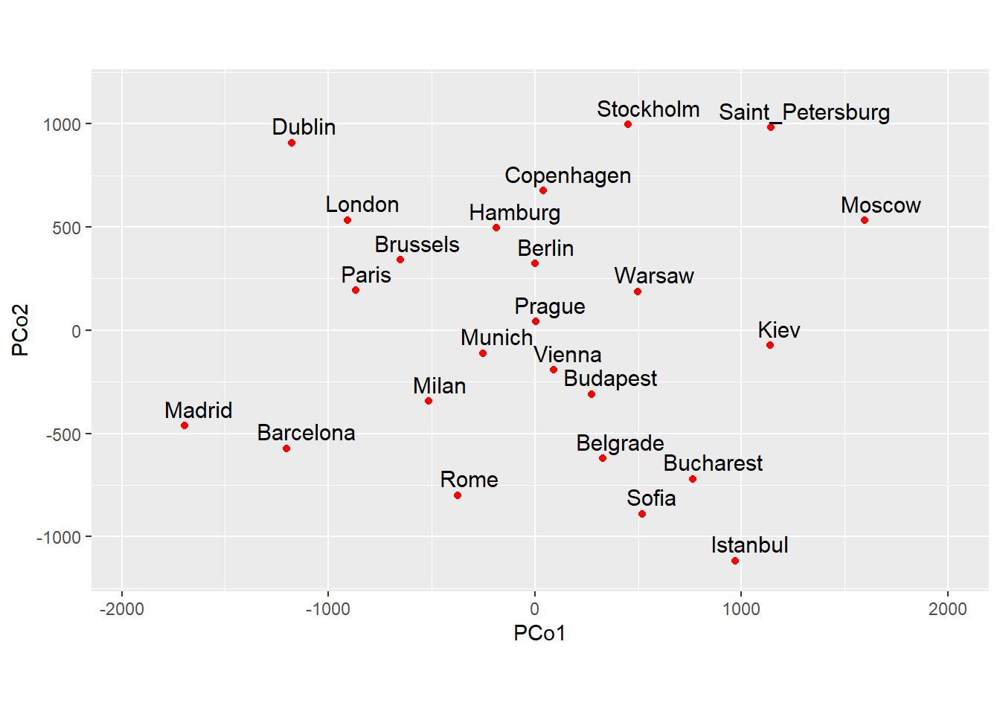
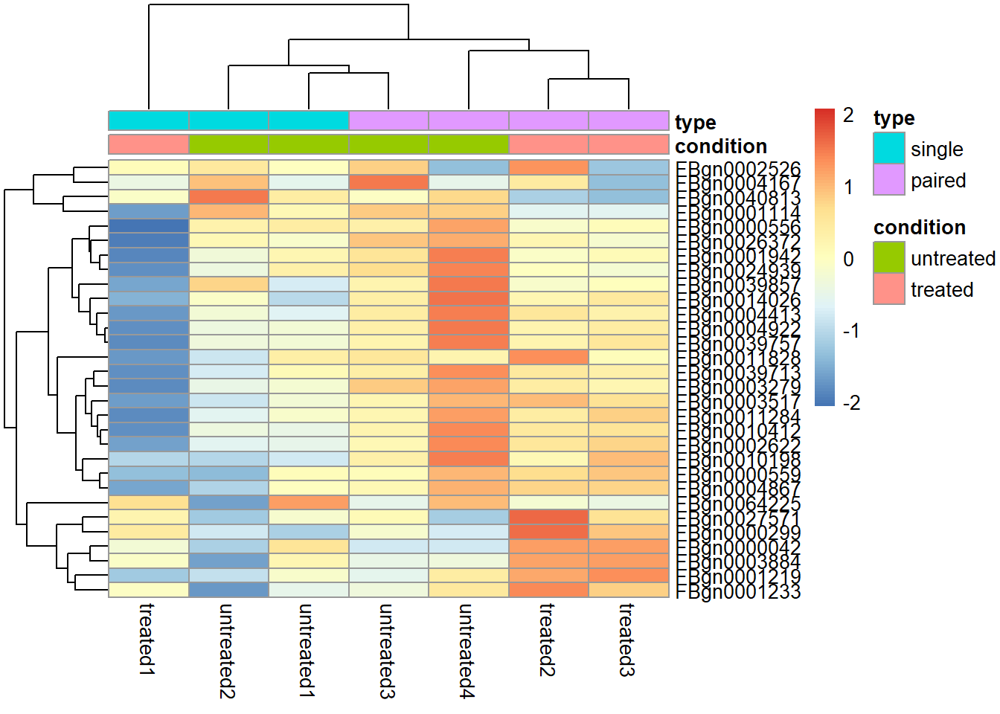
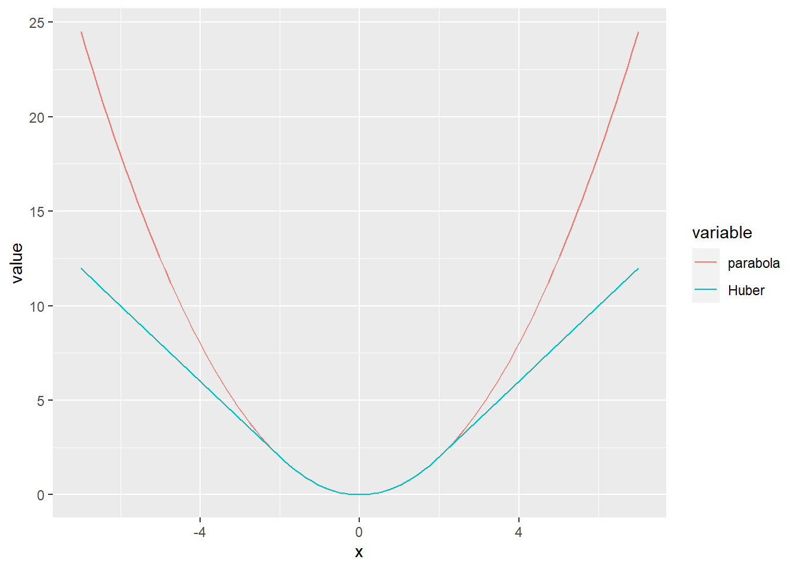
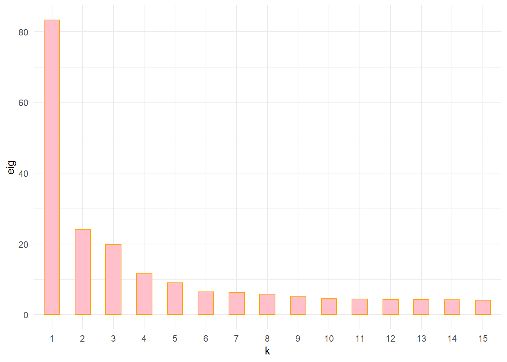
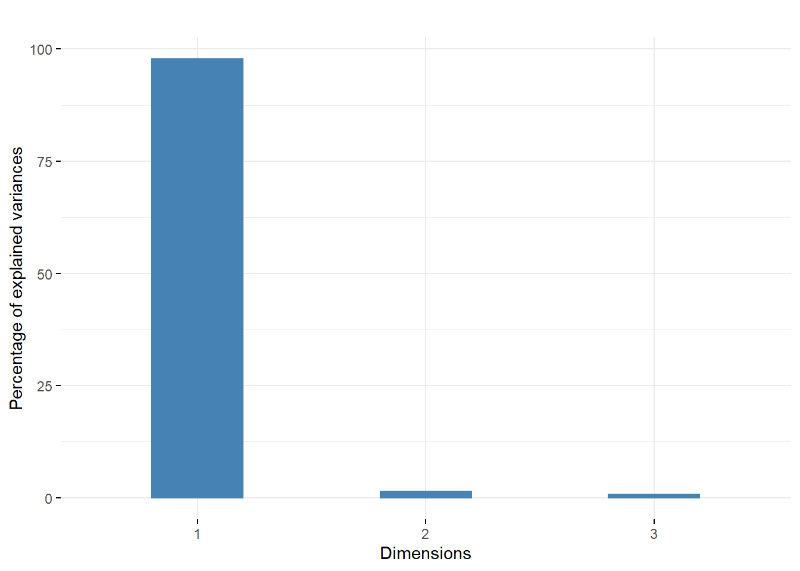

Chapter 2 CAPÍTULO N° 2 - Modelamiento Estadístico
Capítulo N° 2 recuperado de Estadísticas modernas para la biología moderna
Hay dos partes en el procedimiento de modelado. Primero se necesita una distribución para modelar el proceso de generación de datos. Los datos de conteo discretos pueden modelarse mediante distribuciones de probabilidad simples, como las distribuciones binomial, multinomial o de Poisson.
Paquetes
#install.packages("pacman")
library(pacman)
p_load("vcd", "Biostrings","HardyWeinberg","seqLogo","markovchain","igraph","Biostrings","BSgenome",
"BSgenome.Ecoli.NCBI.20080805","Renext","BSgenome.Hsapiens.UCSC.hg19","Gviz")2.1 Un ejemplo simple de modelado estadístico
Descargar el conjunto de datos de este link
#Cargar el archivo "e100.RData"
load("../data/e100.RData")
e99 = e100[-which.max(e100)]
barplot(table(e99), space = 0.8, col = "chartreuse4")
Rootograma que muestra la raíz cuadrada de los valores teóricos como puntos rojos y la raíz cuadrada de las frecuencias observadas como rectángulos desplegables
#library("vcd")
gf1 = goodfit( e99, "poisson")
rootogram(gf1, xlab = "", rect_gp = gpar(fill = "chartreuse4"))
2.1.1 Estimación del parámetro de la distribución de Poisson
#Cantidad de datos por categoria
table(e100)## e100
## 0 1 2 7
## 58 34 7 1Se prueba diferentes valores para la media de Poisson y se cuál se ajusta mejor datos.
table(rpois(100, 3))##
## 0 1 2 3 4 5 6 7 8
## 2 16 25 28 14 5 6 2 2prod(dpois(c(0, 1, 2, 7), lambda = 3))## [1] 3.599302e-052.1.2 Función de verosimilitud de λ
loglikelihood = function(lambda, data = e100) {
sum(log(dpois(data, lambda)))
}
lambdas = seq(0.05, 0.95, length = 100)
loglik = vapply(lambdas, loglikelihood, numeric(1))
m0 = mean(e100)
m0## [1] 0.55plot(lambdas, loglik, type = "l", col = "red", ylab = "", lwd = 2,
xlab = expression(lambda))
abline(v = m0, col = "blue", lwd = 2)
abline(h = loglikelihood(m0), col = "purple", lwd = 2)
La curva roja es la función logarítmica de verosimilitud. La línea vertical muestra el valor de m (la media) y la línea horizontal el log-verosimilitud de m.
gf = goodfit(e100, "poisson")
names(gf)## [1] "observed" "count" "fitted" "type" "method" "df" "par"gf$par## $lambda
## [1] 0.55La salida de goodfites un objeto compuesto llamado lista. Uno de sus componentes se llama par y contiene los valores de los parámetros ajustados para la distribución estudiada. En este caso es solo un número, la estimación de λ .
2.2 Distribuciones binomiales y máxima verosimilitud
cb = c(rep(0, 110), rep(1, 10))
table(cb)## cb
## 0 1
## 110 10mean(cb)## [1] 0.08333333Si se calcula la probabilidad de muchos posibles p , Se puede trazar y ver dónde cae su máximo.
probs = seq(0, 0.3, by = 0.005)
likelihood = dbinom(sum(cb), prob = probs, size = length(cb))
plot(probs, likelihood, pch = 16, xlab = "probability of success",
ylab = "likelihood", cex=0.6)
probs[which.max(likelihood)]## [1] 0.085stopifnot(abs(probs[which.max(likelihood)]-1/12) < diff(probs[1:2]))#verosimilitud
loglikelihood = function(theta, n = 300, k = 40) {
115 + k * log(theta) + (n - k) * log(1 - theta)
}
thetas = seq(0, 1, by = 0.001)
plot(thetas, loglikelihood(thetas), xlab = expression(theta),
ylab = expression(paste("log f(", theta, " | y)")),type = "l")
2.3 Más casillas:datos multinomiales
2.3.1 Sesgo de nucleótidos
El conjunto de datos se encuentra en este link
p_load("Biostrings")
staph = readDNAStringSet("https://raw.githubusercontent.com/unalmdei/GuiaBioinformatica/master/Datos/Cap2/staphsequence.ffn.txt", "fasta")
staph## DNAStringSet object of length 2650:
## width seq names
## [1] 1362 ATGTCGGAAAAAGAAATTTGGG...AAAGAAATAAGAAATGTATAA lcl|NC_002952.2_c...
## [2] 1134 ATGATGGAATTCACTATTAAAA...TTACCAATCAGAACTTACTAA lcl|NC_002952.2_c...
## [3] 246 GTGATTATTTTGGTTCAAGAAG...ATTCATCAAGGTGAACAATGA lcl|NC_002952.2_c...
## [4] 1113 ATGAAGTTAAATACACTCCAAT...CAAGGTGAAATTATAAAGTAA lcl|NC_002952.2_c...
## [5] 1932 GTGACTGCATTGTCAGATGTAA...TATGCAAACTTAGACTTCTAA lcl|NC_002952.2_c...
## ... ... ...
## [2646] 720 ATGACTGTAGAATGGTTAGCAG...ACTCCTTTACTTGAAAAATAA lcl|NC_002952.2_c...
## [2647] 1878 GTGGTTCAAGAATATGATGTAA...CTCCAAAGGGTGAGTGACTAA lcl|NC_002952.2_c...
## [2648] 1380 ATGGATTTAGATACAATTACGA...CAATTCTGCTTAGGTAAATAG lcl|NC_002952.2_c...
## [2649] 348 TTGGAAAAAGCTTACCGAATTA...TTTAATAAAAAGATTAAGTAA lcl|NC_002952.2_c...
## [2650] 138 ATGGTAAAACGTACTTATCAAC...CGTAAAGTTTTATCTGCATAA lcl|NC_002952.2_c...#primer gen
staph[1]## DNAStringSet object of length 1:
## width seq names
## [1] 1362 ATGTCGGAAAAAGAAATTTGGGA...AAAAAGAAATAAGAAATGTATAA lcl|NC_002952.2_c...letterFrequency(staph[[1]], letters = "ACGT", OR = 0)## A C G T
## 522 219 229 392letterFrq = vapply(staph, letterFrequency, FUN.VALUE = numeric(4),
letters = "ACGT", OR = 0)
colnames(letterFrq) = paste0("gene", seq(along = staph))
tab10 = letterFrq[, 1:10]
computeProportions = function(x) { x/sum(x) }
prop10 = apply(tab10, 2, computeProportions)
round(prop10, digits = 2)## gene1 gene2 gene3 gene4 gene5 gene6 gene7 gene8 gene9 gene10
## A 0.38 0.36 0.35 0.37 0.35 0.33 0.33 0.34 0.38 0.27
## C 0.16 0.16 0.13 0.15 0.15 0.15 0.16 0.16 0.14 0.16
## G 0.17 0.17 0.23 0.19 0.22 0.22 0.20 0.21 0.20 0.20
## T 0.29 0.31 0.30 0.29 0.27 0.30 0.30 0.29 0.28 0.36p0 = rowMeans(prop10)
p0## A C G T
## 0.3470531 0.1518313 0.2011442 0.2999714cs = colSums(tab10)
cs## gene1 gene2 gene3 gene4 gene5 gene6 gene7 gene8 gene9 gene10
## 1362 1134 246 1113 1932 2661 831 1515 1287 696expectedtab10 = outer(p0, cs, FUN = "*")
round(expectedtab10)## gene1 gene2 gene3 gene4 gene5 gene6 gene7 gene8 gene9 gene10
## A 473 394 85 386 671 924 288 526 447 242
## C 207 172 37 169 293 404 126 230 195 106
## G 274 228 49 224 389 535 167 305 259 140
## T 409 340 74 334 580 798 249 454 386 209randomtab10 = sapply(cs, function(s) { rmultinom(1, s, p0) } )
all(colSums(randomtab10) == cs)## [1] TRUEstat = function(obsvd, exptd = 20 * pvec) {
sum((obsvd - exptd)^2 / exptd)
}
B = 1000
simulstat = replicate(B, {
randomtab10 = sapply(cs, function(s) { rmultinom(1, s, p0) })
stat(randomtab10, expectedtab10)
})
S1 = stat(tab10, expectedtab10)
sum(simulstat >= S1)## [1] 0hist(simulstat, col = "lavender", breaks = seq(0, 75, length.out=50))
abline(v = S1, col = "red")
abline(v = quantile(simulstat, probs = c(0.95, 0.99)),
col = c("darkgreen", "blue"), lty = 2)
2.4 La distribución Chi-Cuadrado
2.4.1 Intermezzo: cuantiles y gráfico cuantil-cuantil
qs = ppoints(100)
quantile(simulstat, qs)## 0.5% 1.5% 2.5% 3.5% 4.5% 5.5% 6.5% 7.5%
## 14.49673 16.41211 17.33384 17.90384 18.55931 18.88412 19.32605 19.79792
## 8.5% 9.5% 10.5% 11.5% 12.5% 13.5% 14.5% 15.5%
## 20.20113 20.50824 21.02816 21.30351 21.72323 21.93562 22.22107 22.52587
## 16.5% 17.5% 18.5% 19.5% 20.5% 21.5% 22.5% 23.5%
## 22.84351 23.00918 23.27128 23.42933 23.67524 23.97423 24.12287 24.45069
## 24.5% 25.5% 26.5% 27.5% 28.5% 29.5% 30.5% 31.5%
## 24.64120 24.80584 24.90312 25.04759 25.32244 25.44375 25.74990 25.86794
## 32.5% 33.5% 34.5% 35.5% 36.5% 37.5% 38.5% 39.5%
## 26.03575 26.28952 26.43481 26.55938 26.70340 26.95558 27.20768 27.33376
## 40.5% 41.5% 42.5% 43.5% 44.5% 45.5% 46.5% 47.5%
## 27.52790 27.75284 27.94435 28.08659 28.27393 28.43458 28.61036 28.75348
## 48.5% 49.5% 50.5% 51.5% 52.5% 53.5% 54.5% 55.5%
## 29.02689 29.20741 29.37182 29.60724 29.74987 30.02781 30.17212 30.33111
## 56.5% 57.5% 58.5% 59.5% 60.5% 61.5% 62.5% 63.5%
## 30.61863 30.83542 30.97927 31.08163 31.27083 31.40385 31.57254 31.81926
## 64.5% 65.5% 66.5% 67.5% 68.5% 69.5% 70.5% 71.5%
## 32.15034 32.33503 32.49766 32.69779 32.80795 33.00459 33.19797 33.38152
## 72.5% 73.5% 74.5% 75.5% 76.5% 77.5% 78.5% 79.5%
## 33.50242 33.71733 34.01654 34.19548 34.53329 34.84481 35.21927 35.59360
## 80.5% 81.5% 82.5% 83.5% 84.5% 85.5% 86.5% 87.5%
## 36.08071 36.49643 36.88213 37.26827 37.50569 37.86886 38.46149 38.90619
## 88.5% 89.5% 90.5% 91.5% 92.5% 93.5% 94.5% 95.5%
## 39.27139 39.91060 40.56750 41.17875 42.13616 42.60907 43.47799 44.19358
## 96.5% 97.5% 98.5% 99.5%
## 45.10374 46.42665 49.85236 53.86534quantile(qchisq(qs, df = 30), qs)## 0.5% 1.5% 2.5% 3.5% 4.5% 5.5% 6.5% 7.5%
## 14.74308 16.23869 17.16382 17.87179 18.45879 18.96730 19.42030 19.83175
## 8.5% 9.5% 10.5% 11.5% 12.5% 13.5% 14.5% 15.5%
## 20.21086 20.56401 20.89588 21.20996 21.50896 21.79501 22.06984 22.33486
## 16.5% 17.5% 18.5% 19.5% 20.5% 21.5% 22.5% 23.5%
## 22.59125 22.83999 23.08192 23.31776 23.54813 23.77359 23.99461 24.21163
## 24.5% 25.5% 26.5% 27.5% 28.5% 29.5% 30.5% 31.5%
## 24.42502 24.63512 24.84224 25.04668 25.24867 25.44846 25.64627 25.84230
## 32.5% 33.5% 34.5% 35.5% 36.5% 37.5% 38.5% 39.5%
## 26.03673 26.22975 26.42152 26.61219 26.80192 26.99084 27.17910 27.36683
## 40.5% 41.5% 42.5% 43.5% 44.5% 45.5% 46.5% 47.5%
## 27.55414 27.74118 27.92804 28.11486 28.30175 28.48883 28.67621 28.86400
## 48.5% 49.5% 50.5% 51.5% 52.5% 53.5% 54.5% 55.5%
## 29.05231 29.24127 29.43100 29.62161 29.81322 30.00595 30.19994 30.39530
## 56.5% 57.5% 58.5% 59.5% 60.5% 61.5% 62.5% 63.5%
## 30.59219 30.79073 30.99107 31.19337 31.39779 31.60450 31.81367 32.02550
## 64.5% 65.5% 66.5% 67.5% 68.5% 69.5% 70.5% 71.5%
## 32.24019 32.45796 32.67904 32.90367 33.13213 33.36471 33.60172 33.84351
## 72.5% 73.5% 74.5% 75.5% 76.5% 77.5% 78.5% 79.5%
## 34.09046 34.34299 34.60155 34.86665 35.13886 35.41883 35.70725 36.00496
## 80.5% 81.5% 82.5% 83.5% 84.5% 85.5% 86.5% 87.5%
## 36.31286 36.63203 36.96368 37.30925 37.67041 38.04916 38.44789 38.86951
## 88.5% 89.5% 90.5% 91.5% 92.5% 93.5% 94.5% 95.5%
## 39.31761 39.79669 40.31253 40.87266 41.48728 42.17057 42.94329 43.83752
## 96.5% 97.5% 98.5% 99.5%
## 44.90723 46.25504 48.12235 51.45778¿Cómo se calcula el cuantil para cualquier número entre 0 y 1, incluidos los que no son múltiplos de 1 / n?
qqplot(qchisq(ppoints(B), df = 30), simulstat, main = "",
xlab = expression(chi[nu==30]^2), asp = 1, cex = 0.5, pch = 16)
abline(a = 0, b = 1, col = "red")
1 - pchisq(S1, df = 30)## [1] 4.74342e-052.5 Regla de Chargaff
El conjunto de datos se encuentra en este link
load("../data/ChargaffTable.RData")
ChargaffTable## A T C G
## Human-Thymus 30.9 29.4 19.9 19.8
## Mycobac.Tuber 15.1 14.6 34.9 35.4
## Chicken-Eryth. 28.8 29.2 20.5 21.5
## Sheep-liver 29.3 29.3 20.5 20.7
## Sea Urchin 32.8 32.1 17.7 17.3
## Wheat 27.3 27.1 22.7 22.8
## Yeast 31.3 32.9 18.7 17.1
## E.coli 24.7 23.6 26.0 25.7stopifnot(nrow(ChargaffTable) == 8)
mycolors = c("chocolate", "aquamarine4", "cadetblue4", "coral3",
"chartreuse4","darkgoldenrod4","darkcyan","brown4")
par(mfrow=c(2, 4), mai = c(0, 0.7, 0.7, 0))
for (i in 1:8) {
cbp = barplot(ChargaffTable[i, ], horiz = TRUE, axes = FALSE, axisnames = FALSE, col = mycolors[i])
ax = axis(3, las = 2, labels = FALSE, col = mycolors[i], cex = 0.5, at = c(0, 10, 20))
mtext(side = 3, at = ax, text = paste(ax), col = mycolors[i], line = 0, las = 1, cex = 0.9)
mtext(side = 2, at = cbp, text = colnames(ChargaffTable), col = mycolors[i], line = 0, las = 2, cex = 1)
title(paste(rownames(ChargaffTable)[i]), col = mycolors[i], cex = 1.1)
}2.5.1 Dos variables categóricas
statChf = function(x){
sum((x[, "C"] - x[, "G"])^2 + (x[, "A"] - x[, "T"])^2)
}
chfstat = statChf(ChargaffTable)
permstat = replicate(100000, {
permuted = t(apply(ChargaffTable, 1, sample))
colnames(permuted) = colnames(ChargaffTable)
statChf(permuted)
})
pChf = mean(permstat <= chfstat)
pChf## [1] 0.00012hist(permstat, breaks = 100, main = "", col = "lavender")
abline(v = chfstat, lwd = 2, col = "red")
# tabla de contingencia
HairEyeColor[,, "Female"]## Eye
## Hair Brown Blue Hazel Green
## Black 36 9 5 2
## Brown 66 34 29 14
## Red 16 7 7 7
## Blond 4 64 5 8str(HairEyeColor)## 'table' num [1:4, 1:4, 1:2] 32 53 10 3 11 50 10 30 10 25 ...
## - attr(*, "dimnames")=List of 3
## ..$ Hair: chr [1:4] "Black" "Brown" "Red" "Blond"
## ..$ Eye : chr [1:4] "Brown" "Blue" "Hazel" "Green"
## ..$ Sex : chr [1:2] "Male" "Female"2.5.2 Daltonismo y sexo
El conjunto de datos se encuentra en este link
#browseURL("https://github.com/unalmdei/GuiaBioinformatica/blob/master/Datos/Cap2/Deuteranopia.RData")
load("../data/Deuteranopia.RData")
Deuteranopia## Men Women
## Deute 19 2
## NonDeute 1981 1998Se postula el modelo nulo con dos binomios independientes: uno para sexo y otro para daltonismo. Bajo este modelo se puede estimar todas las probabilidades multinomiales de las celdas y se puede comparar los conteos observados con los esperados.
chisq.test(Deuteranopia)##
## Pearson's Chi-squared test with Yates' continuity correction
##
## data: Deuteranopia
## X-squared = 12.255, df = 1, p-value = 0.00046412.5.3 Un multinomio especial: equilibrio de Hardy-Weinberg
library("HardyWeinberg")
data("Mourant")
Mourant[214:216,]## Population Country Total MM MN NN
## 214 Oceania Micronesia 962 228 436 298
## 215 Oceania Micronesia 678 36 229 413
## 216 Oceania Tahiti 580 188 296 96nMM = Mourant$MM[216]
nMN = Mourant$MN[216]
nNN = Mourant$NN[216]
loglik = function(p, q = 1 - p) {
2 * nMM * log(p) + nMN * log(2*p*q) + 2 * nNN * log(q)
}
xv = seq(0.01, 0.99, by = 0.01)
yv = loglik(xv)
plot(x = xv, y = yv, type = "l", lwd = 2,
xlab = "p", ylab = "log-likelihood")
imax = which.max(yv)
abline(v = xv[imax], h = yv[imax], lwd = 1.5, col = "blue")
abline(h = yv[imax], lwd = 1.5, col = "purple")
#utilizando el affunción del HardyWeinberg
phat = af(c(nMM, nMN, nNN))
phat## [1] 0.5793103pMM = phat^2
qhat = 1 - phat
#Los valores esperados bajo el equilibrio de Hardy-Weinberg son entonces
pHW = c(MM = phat^2, MN = 2*phat*qhat, NN = qhat^2)
sum(c(nMM, nMN, nNN)) * pHW## MM MN NN
## 194.6483 282.7034 102.64832.5.4 Comparación visual con el equilibrio de Hardy-Weinberg
pops = c(1, 69, 128, 148, 192)
genotypeFrequencies = as.matrix(Mourant[, c("MM", "MN", "NN")])
HWTernaryPlot(genotypeFrequencies[pops, ],
markerlab = Mourant$Country[pops],
alpha = 0.0001, curvecols = c("red", rep("purple", 4)),
mcex = 0.75, vertex.cex = 1)
HWTernaryPlot(genotypeFrequencies[pops, ],
markerlab = Mourant$Country[pops],
alpha = 0.0001, curvecols = c("red", rep("purple", 4)),
mcex = 0.75, vertex.cex = 1)
HWTernaryPlot(genotypeFrequencies[-pops, ], alpha = 0.0001,
newframe = FALSE, cex = 0.5)
newgf = round(genotypeFrequencies / 50)
HWTernaryPlot(newgf[pops, ],
markerlab = Mourant$Country[pops],
alpha = 0.0001, curvecols = c("red", rep("purple", 4)),
mcex = 0.75, vertex.cex = 1)
2.5.5 Concatenación de varios multinomios: motivos de secuencia y logos
El conjunto de datos se encuentra en este link
library("seqLogo")
load("../data/kozak.RData")
kozak## [,1] [,2] [,3] [,4] [,5] [,6] [,7] [,8] [,9]
## A 0.33 0.25 0.4 0.15 0.20 1 0 0 0.05
## C 0.12 0.25 0.1 0.40 0.40 0 0 0 0.05
## G 0.33 0.25 0.4 0.20 0.25 0 0 1 0.90
## T 0.22 0.25 0.1 0.25 0.15 0 1 0 0.00Aquí hay un diagrama llamado logotipo de secuencia para el multinomio dependiente de la posición que se usa para modelar el motivo Kozak. Codifica la cantidad de variación en cada una de las posiciones en una escala logarítmica. Las letras grandes representan posiciones en las que no hay incertidumbre sobre qué nucleótido se produce.
pwm = makePWM(kozak)
seqLogo(pwm, ic.scale = FALSE)
2.6 Modelado de dependencias secuenciales: cadenas de Markov
library("markovchain")
library("igraph")
sequence = toupper(c("a", "c", "a", "c", "g", "t", "t", "t", "t", "c",
"c", "a", "c", "g", "t", "a", "c","c","c","a","a","a","t","a",
"c","g","g","c","a","t","g","t","g","t","g","a","g","c","t","g"))
mcFit = markovchainFit(data = sequence)
MCgraph = markovchain:::.getNet(mcFit$estimate, round = TRUE)
edgelab = round(E(MCgraph)$weight / 100, 2)
par(mai=c(0,0,0,0))
plot.igraph(MCgraph, edge.label = edgelab,
vertex.size = 40, xlim = c(-1, 1.25))
2.7 Pensamiento bayesiano
2.7.1 Haplotipos
El conjunto de datos se encuentra en este link
haplo6=read.table("https://raw.githubusercontent.com/unalmdei/GuiaBioinformatica/master/Datos/Cap2/haplotype6.txt",header = TRUE)
haplo6## Individual DYS19 DXYS156Y DYS389m DYS389n DYS389p
## 1 H1 14 12 4 12 3
## 2 H3 15 13 4 13 3
## 3 H4 15 11 5 11 3
## 4 H5 17 13 4 11 3
## 5 H7 13 12 5 12 3
## 6 H8 16 11 5 12 32.7.2 Estudio de simulación del paradigma bayesiano para el binomio
library(ggplot2)## Warning: package 'ggplot2' was built under R version 4.1.3##
## Attaching package: 'ggplot2'## The following object is masked _by_ '.GlobalEnv':
##
## statdfbetas = data.frame(
p = rep(thetas, 3),
dbeta = c(dbeta(thetas, 10, 30),
dbeta(thetas, 20, 60),
dbeta(thetas, 50, 150)),
pars = rep(c("Beta(10,30)", "Beta(20,60)", "Beta(50,150)"), each = length(thetas)))
ggplot(dfbetas) +
geom_line(aes(x = p, y = dbeta, colour = pars)) +
theme(legend.title = element_blank()) +
geom_vline(aes(xintercept = 0.25), colour = "#990000", linetype = "dashed")
2.7.3 La distribución de Y
rtheta = rbeta(100000, 50, 350)
y = vapply(rtheta, function(th) {
rbinom(1, prob = th, size = 300)
}, numeric(1))
hist(y, breaks = 50, col = "orange", main = "", xlab = "")
thetaPostEmp = rtheta[ y == 40 ]
hist(thetaPostEmp, breaks = 40, col = "chartreuse4", main = "",
probability = TRUE, xlab = expression("posterior"~theta))
densPostTheory = dbeta(thetas, 90, 610)
lines(thetas, densPostTheory, type="l", lwd = 3)
mean(thetaPostEmp)## [1] 0.1285141dtheta = thetas[2]-thetas[1]
sum(thetas * densPostTheory * dtheta)## [1] 0.1285714thetaPostMC = rbeta(n = 1e6, 90, 610)
mean(thetaPostMC)## [1] 0.128558qqplot(thetaPostMC, thetaPostEmp, type = "l", asp = 1)
abline(a = 0, b = 1, col = "blue")
2.8 Ejemplo: aparición de un patrón de nucleótidos en un genoma
library("Biostrings")
library("BSgenome")
ag = available.genomes()
length(ag)## [1] 107ag[1:2]## [1] "BSgenome.Alyrata.JGI.v1"
## [2] "BSgenome.Amellifera.BeeBase.assembly4"# ocurrencia de la AGGAGGTmotivo
library("BSgenome.Ecoli.NCBI.20080805")
Ecoli## E. coli genome:
## # organism: Escherichia coli (E. coli)
## # genome: 2008/08/05
## # provider: NCBI
## # release date: NA
## # 13 sequences:
## # NC_008253 NC_008563 NC_010468 NC_004431 NC_009801 NC_009800 NC_002655
## # NC_002695 NC_010498 NC_007946 NC_010473 NC_000913 AC_000091
## # (use 'seqnames()' to see all the sequence names, use the '$' or '[[' operator
## # to access a given sequence)shineDalgarno = "AGGAGGT"
ecoli = Ecoli$NC_010473#contar la ocurrencia del patrón en ventanas de ancho 50000
window = 50000
starts = seq(1, length(ecoli) - window, by = window)
ends = starts + window - 1
numMatches = vapply(seq_along(starts), function(i) {
countPattern(shineDalgarno, ecoli[starts[i]:ends[i]],
max.mismatch = 0)
}, numeric(1))
table(numMatches)## numMatches
## 0 1 2 3 4
## 48 32 8 3 2sdMatches = matchPattern(shineDalgarno, ecoli, max.mismatch = 0)Escribir sdMatchesen la línea de comando R para obtener un resumen de este objeto. Contiene las ubicaciones de las 65 coincidencias de patrones, representadas como un conjunto de las llamadas vistas de la secuencia original.
betweenmotifs = gaps(sdMatches)library("Renext")
expplot(width(betweenmotifs), rate = 1/mean(width(betweenmotifs)),
labels = "fit")
2.8.1 Modelado en el caso de dependencias
library("BSgenome.Hsapiens.UCSC.hg19")
chr8 = Hsapiens$chr8
CpGtab = read.table("https://raw.githubusercontent.com/unalmdei/GuiaBioinformatica/master/Datos/Cap2/model-based-cpg-islands-hg19.txt",
header = TRUE)
nrow(CpGtab)## [1] 65699head(CpGtab)## chr start end length CpGcount GCcontent pctGC obsExp
## 1 chr10 93098 93818 721 32 403 0.559 0.572
## 2 chr10 94002 94165 164 12 97 0.591 0.841
## 3 chr10 94527 95302 776 65 538 0.693 0.702
## 4 chr10 119652 120193 542 53 369 0.681 0.866
## 5 chr10 122133 122621 489 51 339 0.693 0.880
## 6 chr10 180265 180720 456 32 256 0.561 0.893irCpG = with(dplyr::filter(CpGtab, chr == "chr8"),
IRanges(start = start, end = end))
grCpG = GRanges(ranges = irCpG, seqnames = "chr8", strand = "+")
genome(grCpG) = "hg19"library("Gviz")
ideo = IdeogramTrack(genome = "hg19", chromosome = "chr8")
plotTracks(
list(GenomeAxisTrack(),
AnnotationTrack(grCpG, name = "CpG"), ideo),
from = 2200000, to = 5800000,
shape = "box", fill = "#006400", stacking = "dense")
CGIview = Views(unmasked(Hsapiens$chr8), irCpG)
NonCGIview = Views(unmasked(Hsapiens$chr8), gaps(irCpG))seqCGI = as(CGIview, "DNAStringSet")
seqNonCGI = as(NonCGIview, "DNAStringSet")
dinucCpG = sapply(seqCGI, dinucleotideFrequency)
dinucNonCpG = sapply(seqNonCGI, dinucleotideFrequency)
dinucNonCpG[, 1]## AA AC AG AT CA CC CG CT GA GC GG GT TA TC TG TT
## 389 351 400 436 498 560 112 603 359 336 403 336 330 527 519 485NonICounts = rowSums(dinucNonCpG)
IslCounts = rowSums(dinucCpG)#cadena de Markov de cuatro estados
TI = matrix( IslCounts, ncol = 4, byrow = TRUE)
TnI = matrix(NonICounts, ncol = 4, byrow = TRUE)
dimnames(TI) = dimnames(TnI) =
list(c("A", "C", "G", "T"), c("A", "C", "G", "T"))MI = TI /rowSums(TI)
MI## A C G T
## A 0.20457773 0.2652333 0.3897678 0.1404212
## C 0.20128250 0.3442381 0.2371595 0.2173200
## G 0.18657245 0.3145299 0.3450223 0.1538754
## T 0.09802105 0.3352314 0.3598984 0.2068492MN = TnI / rowSums(TnI)
MN## A C G T
## A 0.3351380 0.1680007 0.23080886 0.2660524
## C 0.3641054 0.2464366 0.04177094 0.3476871
## G 0.2976696 0.2029017 0.24655406 0.2528746
## T 0.2265813 0.1972407 0.24117528 0.3350027#relación logarítmica de verosimilitud
freqIsl = alphabetFrequency(seqCGI, baseOnly = TRUE,collapse = TRUE)[1:4]
freqIsl / sum(freqIsl)## A C G T
## 0.1781693 0.3201109 0.3206298 0.1810901freqNon = alphabetFrequency(seqNonCGI, baseOnly = TRUE, collapse = TRUE)[1:4]
freqNon / sum(freqNon)## A C G T
## 0.3008292 0.1993832 0.1993737 0.3004139alpha = log((freqIsl/sum(freqIsl)) / (freqNon/sum(freqNon)))
beta = log(MI / MN)
x = "ACGTTATACTACG"
scorefun = function(x) {
s = unlist(strsplit(x, ""))
score = alpha[s[1]]
if (length(s) >= 2)
for (j in 2:length(s))
score = score + beta[s[j-1], s[j]]
score
}
scorefun(x)## A
## -0.2824623generateRandomScores = function(s, len = 100, B = 1000) {
alphFreq = alphabetFrequency(s)
isGoodSeq = rowSums(alphFreq[, 5:ncol(alphFreq)]) == 0
s = s[isGoodSeq]
slen = sapply(s, length)
prob = pmax(slen - len, 0)
prob = prob / sum(prob)
idx = sample(length(s), B, replace = TRUE, prob = prob)
ssmp = s[idx]
start = sapply(ssmp, function(x) sample(length(x) - len, 1))
scores = sapply(seq_len(B), function(i)
scorefun(as.character(ssmp[[i]][start[i]+(1:len)]))
)
scores / len
}
scoresCGI = generateRandomScores(seqCGI)
scoresNonCGI = generateRandomScores(seqNonCGI)br = seq(-0.6, 0.8, length.out = 50)
h1 = hist(scoresCGI, breaks = br, plot = FALSE)
h2 = hist(scoresNonCGI, breaks = br, plot = FALSE)
plot(h1, col = rgb(0, 0, 1, 1/4), xlim = c(-0.5, 0.5), ylim=c(0,120))
plot(h2, col = rgb(1, 0, 0, 1/4), add = TRUE)
2.9 Resumen de este capítulo
En este capítulo experimentamos el yoga básico de la estadística: cómo volver de los datos a las posibles distribuciones generadoras y cómo estimar los parámetros que definen estas distribuciones. Modelos estadísticos Mostramos algunos modelos estadísticos específicos para experimentos con resultados categóricos (binomial y multinomial).
Bondad de ajuste: Se uso diferentes visualizaciones y mostramos cómo ejecutar experimentos de simulación para probar si los datos podrían ajustarse a un modelo multinomial justo de cuatro cajas. Se encontró la estadística chi-cuadrado y vimos cómo comparar la simulación y la teoría usando un gráfico qq.
Estimación: Se explicó los procedimientos de estimación de máxima verosimilitud y bayesianos. Estos enfoques se ilustraron con ejemplos relacionados con el descubrimiento de patrones de nucleótidos y estimaciones de haplotipos.
Distribuciones anteriores y posteriores: Al evaluar datos de un tipo que se ha estudiado previamente, como los haplotipos, puede ser beneficioso calcular la distribución posterior de los datos. Esto permite incorporar la incertidumbre en la toma de decisiones, mediante un simple cálculo. La elección del anterior tiene poco efecto en el resultado siempre que haya suficientes datos.
Islas CpG y cadenas de Markov: Se vio cómo las transiciones de la cadena de Markov pueden modelar las dependencias a lo largo de las secuencias de ADN. Esto se uso para generar puntajes basados en proporciones de probabilidad que nos permiten ver si las secuencias largas de ADN provienen de islas CpG o no. Cuando se hizó el histograma de puntajes, se vio una característica notable: parecía estar hecho de dos piezas.
2.10 Ejercicios
2.10.1 Pregunta N° 1
Una secuencia de tres nucleótidos (un codón ) tomada en una región codificante de un gen se puede transcribir en uno de los 20 aminoácidos posibles. Decimos que el código genético es redundante: hay varias formas de deletrear cada aminoácido.
La multiplicidad (el número de codones que codifican para el mismo aminoácido) varía de 2 a 6. Las diferentes grafías de codones de cada aminoácido no ocurren con las mismas probabilidades. Veamos los datos de la cepa de laboratorio estándar de tuberculosis (H37Rv): El conjunto de datos se encuentra disponible en este link
mtb = read.table("https://raw.githubusercontent.com/unalmdei/GuiaBioinformatica/master/Datos/Cap2/M_tuberculosis.txt", header = TRUE)
head(mtb, n = 4)## AmAcid Codon Number PerThous
## 1 Gly GGG 25874 19.25
## 2 Gly GGA 13306 9.90
## 3 Gly GGT 25320 18.84
## 4 Gly GGC 68310 50.82Los codones para el aminoácido prolina son de la forma $C |C| ∗ ⊕ $, y ocurren con las siguientes frecuencias en Mycobacterium turberculosis:
pro = mtb[ mtb$AmAcid == "Pro", "Number"]
pro/sum(pro)## [1] 0.54302025 0.10532985 0.05859765 0.29305225- Explorar los datos mtbusando tablepara tabular las AmAcid y Codon .
- ¿Cómo fue el PerThousvariable creada?
- Escriba una función R que pueda aplicar a la tabla para encontrar cuál de los aminoácidos muestra el sesgo de codón , es decir, la desviación más fuerte de la distribución uniforme entre sus posibles grafías.
2.10.2 pregunta N° 2
Muestre el contenido de GC en una ventana en ejecución a lo largo de la secuencia de Staphylococcus Aureus . Leer en una fasta de un archivo.
El conjunto de datos se encuentra disponible en este link
staph = readDNAStringSet("https://raw.githubusercontent.com/unalmdei/GuiaBioinformatica/master/Datos/Cap2/staphsequence.ffn.txt", "fasta")- Mirar el completo staphobjeto y luego mostrar las primeras tres secuencias en el conjunto.
staph[1:3, ]## DNAStringSet object of length 3:
## width seq names
## [1] 1362 ATGTCGGAAAAAGAAATTTGGGA...AAAAAGAAATAAGAAATGTATAA lcl|NC_002952.2_c...
## [2] 1134 ATGATGGAATTCACTATTAAAAG...TTTTACCAATCAGAACTTACTAA lcl|NC_002952.2_c...
## [3] 246 GTGATTATTTTGGTTCAAGAAGT...TCATTCATCAAGGTGAACAATGA lcl|NC_002952.2_c...staph## DNAStringSet object of length 2650:
## width seq names
## [1] 1362 ATGTCGGAAAAAGAAATTTGGG...AAAGAAATAAGAAATGTATAA lcl|NC_002952.2_c...
## [2] 1134 ATGATGGAATTCACTATTAAAA...TTACCAATCAGAACTTACTAA lcl|NC_002952.2_c...
## [3] 246 GTGATTATTTTGGTTCAAGAAG...ATTCATCAAGGTGAACAATGA lcl|NC_002952.2_c...
## [4] 1113 ATGAAGTTAAATACACTCCAAT...CAAGGTGAAATTATAAAGTAA lcl|NC_002952.2_c...
## [5] 1932 GTGACTGCATTGTCAGATGTAA...TATGCAAACTTAGACTTCTAA lcl|NC_002952.2_c...
## ... ... ...
## [2646] 720 ATGACTGTAGAATGGTTAGCAG...ACTCCTTTACTTGAAAAATAA lcl|NC_002952.2_c...
## [2647] 1878 GTGGTTCAAGAATATGATGTAA...CTCCAAAGGGTGAGTGACTAA lcl|NC_002952.2_c...
## [2648] 1380 ATGGATTTAGATACAATTACGA...CAATTCTGCTTAGGTAAATAG lcl|NC_002952.2_c...
## [2649] 348 TTGGAAAAAGCTTACCGAATTA...TTTAATAAAAAGATTAAGTAA lcl|NC_002952.2_c...
## [2650] 138 ATGGTAAAACGTACTTATCAAC...CGTAAAGTTTTATCTGCATAA lcl|NC_002952.2_c...- Encuentre el contenido de GC en tsequence windows de ancho 100.
letterFrequency(staph[[1]], letters = "ACGT", OR = 0)## A C G T
## 522 219 229 392GCstaph = data.frame(
ID = names(staph),
GC = rowSums(alphabetFrequency(staph)[, 2:3] / width(staph)) * 100
)- Muestre el contenido de GC en una ventana deslizante como una fracción.
window = 100
gc = rowSums( letterFrequencyInSlidingView(staph[[364]], window,
c("G","C")))/window
plot(x = seq(along = gc), y = gc, type = "l")- ¿Cómo podríamos visualizar las tendencias generales de estas proporciones a lo largo de la secuencia?
plot(x = seq(along = gc), y = gc, type = "l")
lines(lowess(x = seq(along = gc), y = gc, f = 0.2), col = 2)